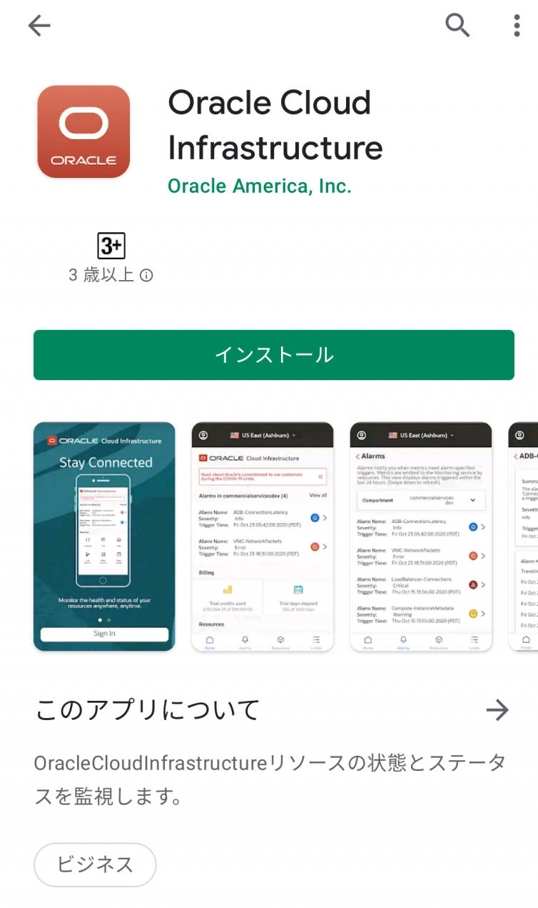
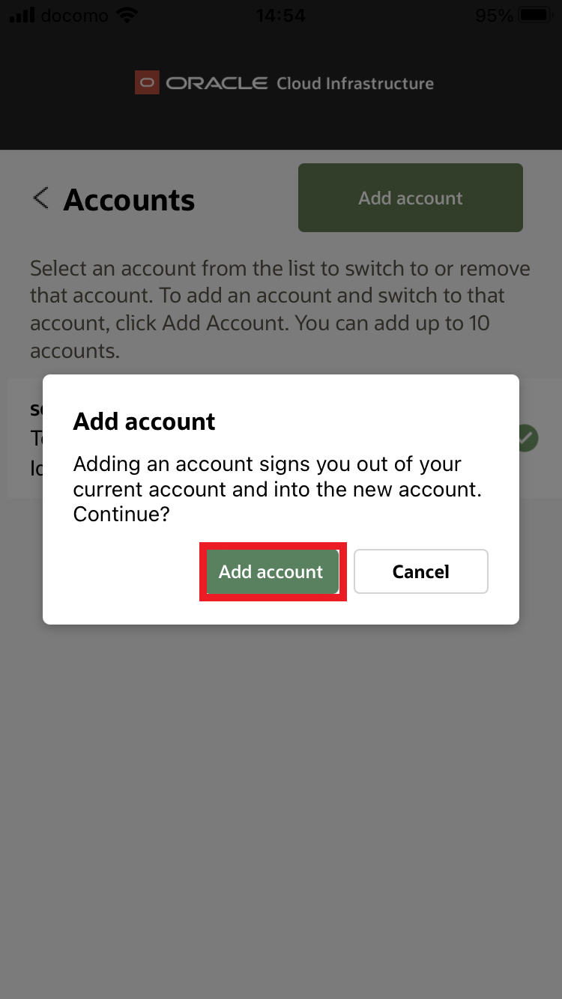
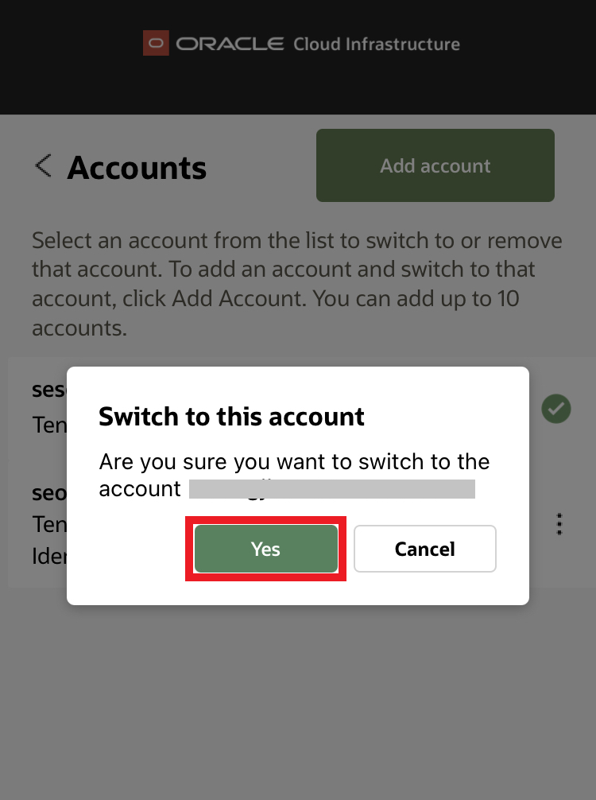
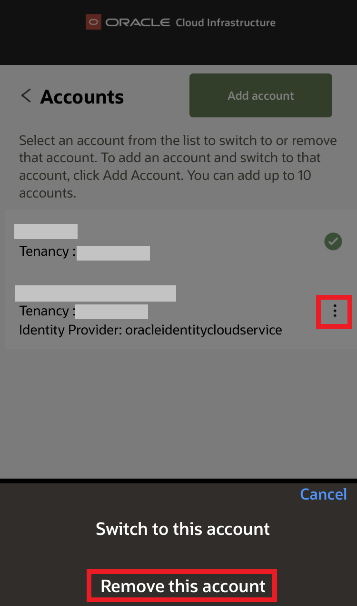
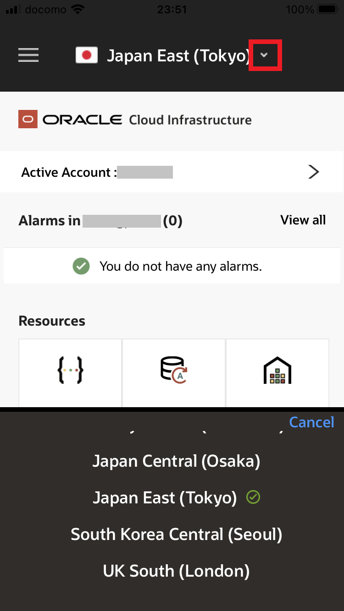

チュートリアル一覧に戻る : Oracle Cloud Infrastructure チュートリアル
Oracle Cloud Infrastructure モバイル・アプリケーションをインストールすると、アプリからリソースの詳細を表示したり、リソースに変更を加えることができます。 ユースケースとしては以下のようなものがあります。
- 外出先でアラート、通知および制限を確認することができます。
- リソース、請求、使用状況データに関する情報にすばやくアクセスできます。
- モバイル・デバイスからリソースの起動、停止、再起動または削除を行えます。
このチュートリアルでは、Oracle Cloud Infrastructure モバイル・アプリケーションの基本的な使い方をご案内します。
所要時間 : 約15分
前提条件 : 有効な Oracle Cloud Infrastructure のテナントと、アクセスのための有効なユーザーIDとパスワードがあること
注意 : チュートリアル内の画面ショットについては 現在の画面と異なっている場合があります
1. OCIモバイル・アプリケーションをインストールする
Google Play StoreかApple App Storeで、Oracle Cloud Infrastructureを検索してアプリケーションを選択し、インストールのステップに従います。
このアプリケーションは、以下のオペレーティング・システムでサポートされています:
- Android 8以降のバージョン
- iOS 11以降のバージョン
Google Play Store

Apple App Store

2. サインインする
Oracle Cloud Infrastructure モバイル・アプリケーションでサインインするには、コンソールへのサインインと同じステップでサインインします。詳細は、その1 - OCIコンソールにアクセスして基本を理解するの3.コンソールへのログインを参考にしてください。
初めてサインインするときは、アプリケーションにアクセスするために使用許諾契約を読んで同意する必要があります。
2-1 複数アカウントを追加する
テナンシの切替えを容易にするために、モバイル・アプリケーションに最大10のアカウントを登録することができます。
アカウントを追加するには:
-
左上の 「メニュー【三】」を開き、「アカウント」をタップします。

-
「アカウント」画面で、「アカウントの追加」をタップします。確認ダイアログが表示されます。

-
確認ダイアログで、「アカウントの追加」をタップします。

-
新しいアカウントにサインインします。アカウントがアカウント・リストに追加され、新しく追加されたアカウントにサインインされます。
アカウントを切り替えるには:
-
左上の 「メニュー【三】」を開き、「アカウント」をタップします。
-
アカウントのリストで、切替え先のアカウントの 「アクション・メニュー」をタップし、「このアカウントに切替え」をタップします。確認ダイアログが表示されます。

-
確認ダイアログで、「はい」をタップします。

アカウントを削除するには:
-
左上の 「メニュー【三】」を開き、「アカウント」をタップします。
-
アカウントのリストで、削除するアカウントの 「アクション・メニュー」をタップし、「このアカウントを削除」をタップします。確認ダイアログが表示されます。

-
確認ダイアログで、「はい」をタップします。

2-2 自動サインインを有効化する
モバイル・アプリケーションに簡単にサインインするために、自動サインインの有効化を設定できます。 自動サインインでは、ユーザーがアプリケーションにアクセスするとAPIキーを使用して認証が行われ、サインアウトするまでサインインしたままになります。秘密キーと生成されたフィンガープリントは、デバイスのオペレーティング・システムに応じて、AndroidキーストアかiCloudキーチェーンのいずれかで暗号化されて格納されます。
自動サインインを有効にするには:
-
左上の 「メニュー【三】」を開き、「設定」をタップします。

-
「アクティブなアカウント設定」 > 「ログイン・セキュリティ」の 「APIキー・フィンガープリント」の値が、モバイル・アプリケーションが使用しているAPI署名キーです。 ユーザーごとのAPIキーの上限は3つまでです。
アカウントがこの制限に達した場合、既存のAPIキーのいずれかを削除するまで、モバイル・アプリケーションではこの機能を使用できません。
API署名キーは、コンソールを使用してAPIキーを削除できます。

3. モバイル・アプリケーションを使用する
アプリケーションにサインインすると、「ホーム」タブが表示されます。「ホーム」タブの他に、アプリケーションには 「アラーム」、「リソース」および 「制限」タブがあります。
3-1 アラームを表示する
「アラーム」タブには、過去24時間以内に発生したアラームの詳細が表示されます。タブの上部にある 「コンパートメント」ピッカーから、コンパートメントを選択します。特定のアラームの詳細を表示するには、リストでそのアラームをタップします。 アラームの詳細は、アラーム機能の概要を参照してください。

3-2 リソースを確認する
「リソース」タブを使用して、リソースの詳細を表示し、リソースの起動、停止、再起動、削除を行います。 現在、このアプリには次のタイプのリソースが含まれます:
- コンピュート・インスタンス
- ブロック・ボリューム
- オブジェクト・ストレージ・バケット
- ロード・バランサ
- Autonomous Transaction Processing
-
Autonomous Data Warehouse


タブの上部にある 「コンパートメント」ピッカーを使用して、コンパートメントを選択します。「リソースのフィルタ」テキスト・ボックスを使用すると、キーワードに基づくフリー・テキスト検索を使用してリソースを検索できます。
詳細は、検索の概要を参照してください。

各カテゴリのリソースのリストを表示するには、セクションをタップします。 リソース名の横にあるアイコンで、リソースのステータスがわかります。 リソースの詳細を表示するには、リソース名をタップします。そこでリソースの起動、停止、再起動、削除の操作を行うことができます。 また、次のようなリソースの詳細も確認できます。
- リソースのステータス
- メトリックによるビジュアライゼーション(リソースのヘルス、容量、パフォーマンスをモニターできます)
-
リソースのメタデータ


3-3 制限を確認する
「制限」タブには、現在のサービス制限および使用量の詳細が表示されます。サービス制限は、リソースに対して設定される割当てまたは許容量です。たとえば、テナンシには可用性ドメイン当たりのコンピュート・インスタンスの最大数が割り当てられています。 サービス制限の詳細は、サービス制限を参照してください。
制限を確認するには:
- 「制限」タブから、表示する制限にリストをフィルタします。
- 「コンパートメント」ピッカーで、コンパートメントを選択します。
- 「リソース」ピッカーで、サービスを選択します。
- 選択したら、「検索制限」をタップして、制限と現在の使用量のリストを表示します。
結果のリストの各アイテムには、サービス制限の説明、そのサービスの現在の使用量、および使用可能な制限の合計が表示されます。

3-4 リージョンの切り替え
モバイル・アプリケーションの上部に表示されているリージョンが、選択されているリージョンになります。テナンシが複数のリージョンにサブスクライブされている場合は、「リージョン」ピッカーから別のリージョンを選択してリージョンを切り替えることができます。 
3-5 タイムゾーンの切り替え
モバイル・アプリケーションは、UTC時間またはローカル時間を使用するように設定できます。
タイム・ゾーンを切り替えるには:
-
左上の 「メニュー【三】」を開き、「設定」をタップします。
-
「アプリケーション設定」の 「タイム・ゾーン」メニューにある 「タイム・ゾーンの設定」で、「ローカル」または、「UTC」を選択します。

4. サインアウトする
左上の 「メニュー【三】」を開き、「サインアウト」をタップします。*